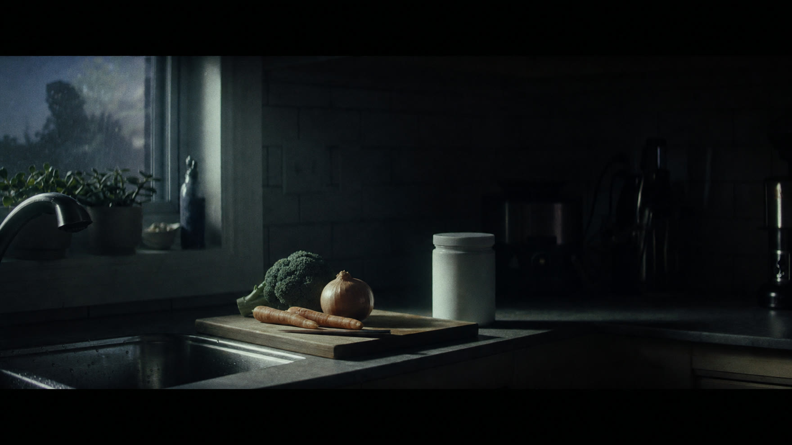
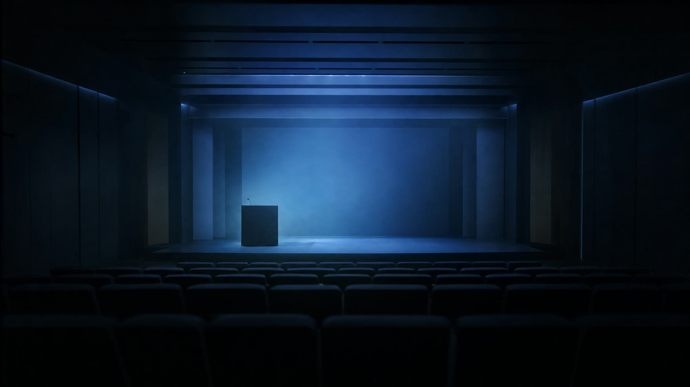

Two six second data animations and a five scene opening buildup for the Julie Gibson Clark masterclass. Built on her measured DunedinPACE result of 0.665 against a population average of 1.00.
Both are composited over real cinematic plates, finished at 60 frames per second, 1080 by 1080, silent by design so they carry sound-off in feed. Every figure on screen is measured, never estimated.
Ten years of life run as a race between two people. The average adult finishes with ten biological years added. Julie finishes with 6.65. The gap resolves into the only number that matters.
Gold ink enters a black frame. The claim lands before anything else.
Both rails start the same ten years. The counters begin to separate.
10.00 against 6.65. The unlived remainder lights up in gold.
3.35 years she never aged.
Resolve card, pace of aging 0.665, brand line last.
The whole human population, drawn as one curve. It builds outward from the average, then a gold beam falls into the far left tail and stops where Julie actually measured.
Blue light and dust. The two numbers stated plainly in type.
Eighty four measurement lines grow outward from the mean.
A gold beam leaves 1.00 and travels into the left tail.
0.665, Julie Gibson Clark, 33.5% slower than average.
Resolve card, the rank she held, the cost she paid.
Prestige trailer shape. The claim first, the measurement second, the price third, the person fourth, the room last. Frames below are pre-visualisation plates with the exact on-screen card treatment in position.
I age thirty-three point five percent slower than average.
Chest-up portrait, eyes above centre, background fully softened. Soft key 45 degrees camera left, narrow cool rim rear right, one dim amber practical far behind. No logo, no lower third, no slate.
On the first syllable of slower, cut 10 frames to a macro of her eye catching the key light, then return before average completes.
Card enters over 6 frames on slower, centred lower middle, condensed white grotesque, black gradient only behind the baseline.
One low close cello harmonic, near-inaudible room tone, single sub hit exactly on 33.5. No percussion yet. Dialogue fully dominant and dry.
Match cut from the circular catchlight in her eye to the circular assay marker on the printed DunedinPACE report.
My DunedinPACE is zero point six six five. Average is one point zero zero.
Top-down macro of the cleared result document, 1.2 second slider move, then over her shoulder at a real desk on a 50mm at T2.8 with a slow 8 degree orbit toward her face.
Land on the report at DunedinPACE, push into the result field on the first six, cut to the 0.665 over 1.00 comparison at Average, return to her hand on the page at one.
Two cards as one quiet data readout, upper left. 0.665 set in pale mineral green, the benchmark line at 55 percent of the size in warm grey. No animated chart here.
Second cello a fifth above the first, faint pencil-on-paper on DunedinPACE, a short glass tick at 0.665 and a lower tick at 1.00. No medical monitor sounds.
Dissolve from the diagonal edge of the report into the diagonal edge of a grocery receipt. Matching paper texture carries proof into practicality.

I do this for roughly one hundred dollars a month.
Her own counter, hands and torso only, ordinary groceries beside a receipt. Two inch lateral drift, never shaky, then a 65mm insert of the receipt total and a pen circling one line in a handwritten budget.
Receipt on roughly, handwritten monthly total on hundred, a prepared meal going into the fridge on month, framed as habit rather than product.
Bold white grotesque on a 70 percent charcoal rectangle, lower left. The second line holds only after the voice over ends, for 8 frames.
Restrained pulse enters, muted kick and brushed percussion at 82 BPM. Paper fold on roughly, pen tap on hundred, natural fridge thump on month. Dialogue 5 to 7 dB above score.
Match cut on her hand closing the fridge to the same hand closing a laptop at her recruiting desk.
I am a mom, recruiter, former engineer. I follow evidence.
Profile three-quarter medium as she finishes a recruiting call, then a tight 85mm of her walking with her child from behind, hands linked, faces not required. Return to her reviewing notes beside a structural plan detail.
Linked hands on mom, laptop closing on recruiter, fingertip on the structural plan at former, the cleared 2023 leaderboard asset at evidence.
Three nouns in editorial serif upper left, 4 frame opacity rise only. The rank card enters lower right on evidence, #2 set 1.6 times larger, and holds 12 frames.
Pulse gains a muted analog bass note. Real laptop close, light paper trace, restrained upward string swell on evidence. The child moment stays unscored for its first 6 frames.
Speed-ramped whip driven by her turning from the plan toward camera, resolving on the same direction as her entrance in scene five.

At Longevity Life Academy, I show how I choose.
Dark studio, medium close direct to camera, still authority. Slow push from 50mm to a 75mm equivalent crop by the final word, one wide 32mm reveal of table, notebook and defocused teaching monitor.
Stay on her first direct gaze at Longevity, cut to the wide teaching view as her hand opens over the notebook at show, return to the portrait at choose and begin the end card.
Ivory line centred low on show, 3 percent tracking. Full frame ivory end card on choose, black editorial serif name, smaller grotesque brand line. No logo appears anywhere before this card.
Strings lift an octave with a restrained piano octave at Longevity, warm cymbal swell opens the wide shot at show, first full chord on choose, then the chord breathes under the 0.8 second hold.
Dissolve her rim light into the ivory card, the bright edge expanding until it becomes the field. The chord continues into the next section of the film.
| Scene | Belief installed | Tension | Proof on screen |
|---|---|---|---|
| 01 The claim | Something measurable is different about this person | 6 | 33.5% slower than average |
| 02 The number | The claim is verified, not asserted | 7 | DunedinPACE 0.665 against 1.00 |
| 03 The constraint | This result is financially realistic | 5 | Roughly $100 a month |
| 04 The person | A working parent achieved it, not a technologist | 8 | Held #2 on the 2023 leaderboard |
| 05 The room | Her method can be learned, live | 9 | Longevity Life Academy faculty |
The No. 2 rank is a held 2023 result, recorded before the leaderboard rule change. A live check on 6 August 2026 shows Bryan Johnson at 0.503 and Julie outside the visible top 25. Every card, every voice over line and both animations are written in the past tense on purpose. 0.665 against 1.00 is exactly 33.5 percent slower, computed rather than quoted. Monthly cost is reported between roughly $27 and $150 depending on the outlet, so every asset says roughly $100.
{kind=link}
{kind=link}